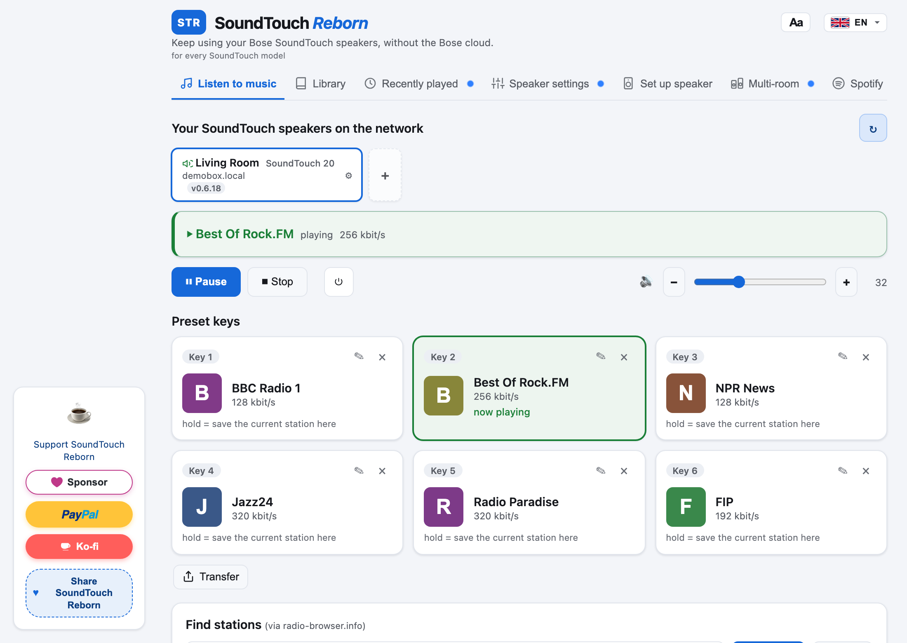

Your Bose SoundTouch, working again.
Bose switched off the SoundTouch cloud on 6 May 2026. SoundTouch Manager brings back internet radio, the preset buttons, Spotify and remote control, all running locally on your speaker, with no account and no cloud.
Free and open source (MIT license).
What it brings back
Internet radio
Search thousands of stations from radio-browser.info and play them on any speaker.
Preset buttons 1 to 6
The hardware buttons on the speaker and remote work again, with the stations you choose.
Spotify Connect
Play Spotify on the speaker and save playlists to the preset buttons.
Your own music
Browse DLNA media servers on your network (FRITZ!Box, Synology, Plex, miniDLNA).
Multiroom and stereo
Group speakers to play in sync, or pair two as left and right.
Phone remote
Each speaker serves a remote for your phone's browser. No app store, no account.
Install in three steps
- Download the app for Windows, macOS or Linux.
- Open it on the same network as your speaker. It finds your SoundTouch speakers automatically.
- Choose "Set up speaker". The app installs a small agent onto the speaker over your home network. No USB stick needed; one remains available as a fallback.
Windows or macOS warns that the app is from an unknown developer
A build that is not code-signed triggers a warning the first time you open it.
- Windows (SmartScreen): click More info, then Run anyway. If the browser blocks the .exe, download the .zip and open the file inside.
- macOS (Gatekeeper): the disk image is for Apple Silicon (M1 or newer). Drag the app to Applications, then right-click it, choose Open, then Open again. Or go to System Settings, Privacy & Security and click Open Anyway.
- Linux: extract the archive, run
chmod +x SoundTouchManager-1.0.0-Linux-x64, then start it. It needs GTK 3 and WebKitGTK 4.1.
To check that your download is intact, compare its SHA-256 with the SHA256SUMS file.
Android, before the app is on Google Play
Download SoundTouchManager-1.0.0.apk and open it. Android warns because the file does not come from the Play Store.
- If the browser says the file can harm your device, choose Download anyway.
- If Android blocks the install, tap Settings and allow your browser or the Files app to install unknown apps. Then open the file again.
- If Play Protect says the app is unknown, tap More details, then Install anyway.
This copy can install SoundTouch Manager onto a speaker that is already on your Wi-Fi. Optional support purchases inside this copy do not go through; those work in the Play Store version. When that version is available, uninstall this copy first and then install from Play.
There is no iPhone package in the release. Apple only installs an app that it has signed for that phone, or one that comes from the App Store.
Supported speakers
| Model | Status |
|---|---|
| SoundTouch 10 | Verified |
| SoundTouch 20 | Works |
| SoundTouch 30 | Works |
| SoundTouch Portable | Verified |
| SoundTouch 300, Wave III and IV, SA-4, SA-5, CineMate 520 and 130 | Works (network install) |
Details per model: docs/MODELS.md.
FAQ
Do I need a Bose account or the Bose app?
No. Everything runs on your speaker and your computer, on your home network.
Which speaker firmware do I need?
SoundTouch Manager is built and tested against Bose firmware 27.0.6, the last one Bose released. Update the speaker first, then install. The firmware guide explains how, using Bose's own images and a USB stick.
The firmware update gets stuck or is refused
Speakers on a much older firmware have been reported to refuse the jump straight to 27.0.6. What worked in the field was to go down first and then up: install 6.02.01, then 27.0.6. A factory reset (hold 1 and volume down for ten seconds) before the update can clear a half-configured state. These steps come from user reports and were not reproduced by the project; see section 4 of the firmware guide.
How do I remove it from a speaker?
In the app, open the speaker's settings and choose Remove STM. A Bose factory reset alone does not remove it, so use this before you sell or give away a speaker.
Something does not work
Check the open issues or open a new one. In the app, Save diagnostic logs in the footer creates an anonymised report you can attach.
Support the project
SoundTouch Manager is free. If it saved your speakers, a coffee helps keep it going.